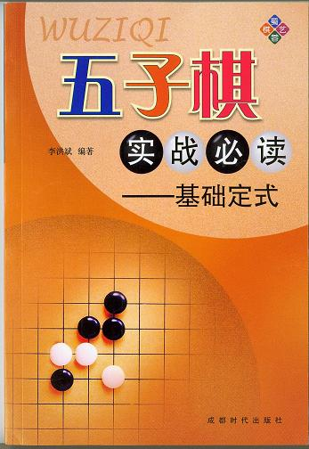

《五子棋实战必读-基础定式》一书现已由成都时代出版社（原蜀蓉棋艺出版社）正式出版发行。本书在编写过程中得到上海五子棋协会及众多棋友的帮助与支持，顾炜也在百忙之中为本书作序，在此表示感谢！由于本人水平有限，书中如有错漏之处希望各位指正，以便将来进一步修订并完善。

如有棋友在本地购书不便， 新华书店在卖吧，全国发行的。 新华书店没有卖。 成都棋院楼下有卖。 宁波新华书店库存三本 让我买了一本 还剩两本 极地大哥在哪买的？是长沙啵？ 我去新华书店看看... 北京这边西单图书大厦、图书城都有卖。书不厚，但内容丰富，正在慢慢研究...... 你也可以自己找找其他家，买前问问掌柜的有没有货先。咳咳。http://item.taobao.com/item.htm?id=5351405250&ad_id=&am_id=&cm_id=&pm_id= 极地大哥在哪买的？是长沙啵？ 我去新华书店看看... 超过3本免邮费，如果想要签名，可以直接跟李老师说，是同一本书，我到手六本，有李老师签名。 详细的最好直接联系李老师问吧。 哪里有卖贵吗？ 我刚读完，是一本很妙的书！！ 这书已经有电子版下载了 （杰出连珠网） http://www.jjie.net/download/pdf/shizhanbidu.rar
#2 Re:《五子棋实战必读-基础定式》 作者：浩瀚铭剑 发表时间：2010-5-5 21:42:57
无条件的支持
#3 Re:《五子棋实战必读-基础定式》 作者：黄药师 发表时间：2010-5-5 21:47:38
哪里有的卖？
#4 Re:《五子棋实战必读-基础定式》 作者：浩瀚铭剑 发表时间：2010-5-5 22:09:35
#5 Re:《五子棋实战必读-基础定式》 作者：水月 发表时间：2010-5-6 0:01:58
= = 貌似很不错～
#6 Re:《五子棋实战必读-基础定式》 作者：黄药师 发表时间：2010-5-6 8:12:43
13元哟，性价比很高啊！
#7 Re:《五子棋实战必读-基础定式》 作者：王小 发表时间：2010-5-10 21:44:43
#8 Re:《五子棋实战必读-基础定式》 作者：王小 发表时间：2010-5-10 21:50:41
www.amazon.cn 上有卖
#9 Re:《五子棋实战必读-基础定式》 作者：潜龙勿用吉 发表时间：2010-5-20 18:32:00
#10 Re:《五子棋实战必读-基础定式》 作者：极地剑客 发表时间：2010-5-25 19:24:58
到手一本~还可以~相当于中文版的五珠...
#11 Re:《五子棋实战必读-基础定式》 作者：中中 发表时间：2010-9-10 11:48:13
#12 Re:《五子棋实战必读-基础定式》 作者：五子米猫 发表时间：2010-9-19 16:38:41
#13 Re:《五子棋实战必读-基础定式》 作者：与郎共五 发表时间：2010-9-19 17:47:15
已拜读，含金量高
#14 Re:《五子棋实战必读-基础定式》 作者：岑小鱼 发表时间：2010-12-30 0:22:05
请问下这本书如果购买10本 邮寄到长沙市 价格是多少啊....
#15 Re:Re:《五子棋实战必读-基础定式》 作者：小红眼镜 发表时间：2010-12-30 2:18:49引用：
原文由 岑小鱼 发表于 2010-12-30 0:22:05 :
请问下这本书如果购买10本 邮寄到长沙市 价格是多少啊....  淘宝上搜索一下，一堆拉。给你找了一家，免邮的。一本10元。
淘宝上搜索一下，一堆拉。给你找了一家，免邮的。一本10元。
#16 Re:Re:《五子棋实战必读-基础定式》 作者：极地剑客 发表时间：2010-12-30 4:41:46引用：
原文由 中中 发表于 2010-9-10 11:48:13 :
#17 Re:《五子棋实战必读-基础定式》 作者：岑小鱼 发表时间：2011-1-1 18:04:57
主要是还想了解这书跟另外一个帖子说的有签名的书 是否是同一本？ 如果是的话还是有签名比较好哈
#18 Re:Re:《五子棋实战必读-基础定式》 作者：虎哥 发表时间：2011-1-2 23:41:29
#19 Re:《五子棋实战必读-基础定式》 作者：三国老凯 发表时间：2011-1-3 0:28:53
上面QQ是李老师的吗？
#20 Re:《五子棋实战必读-基础定式》 作者：三国老凯 发表时间：2011-1-3 0:34:25
http://www.amazon.cn/s/ref=nb_sb_noss?__mk_zh_CN=%E4%BA%9A%E9%A9%AC%E9%80%8A%E7%BD%91%E7%AB%99&url=search-alias%3Dstripbooks&field-keywords=%E4%BA%94%E5%AD%90%E6%A3%8B此处有卖。网银支付
#21 Re:《五子棋实战必读-基础定式》 作者：茗弈小九 发表时间：2011-2-18 14:19:59
#22 Re:《五子棋实战必读-基础定式》 作者：愉悦深思 发表时间：2011-3-1 12:13:27
这书初段之前，似乎看不大懂的......
#23 Re:《五子棋实战必读-基础定式》 作者：猪无戒 发表时间：2011-8-9 9:50:02
#24 Re:《五子棋实战必读-基础定式》 作者：白衣神童小剑魔 发表时间：2011-8-10 11:20:46
#25 Re:《五子棋实战必读-基础定式》 作者：阔哥 发表时间：2011-8-10 11:21:58
13块，比买谱划算
#26 Re:《五子棋实战必读-基础定式》 作者：小丸.net 发表时间：2011-8-10 11:26:26
绝版签名本耶。。。才15块。。。。我买了20本。。。。当作礼物送给朋友们了。。。
#27 Re:《五子棋实战必读-基础定式》 作者：自来水 发表时间：2011-8-10 11:27:34
买谱不靠谱....
#28 Re:《五子棋实战必读-基础定式》 作者：爱因思谈 发表时间：2011-10-4 8:48:24
都是强人啊，呵呵